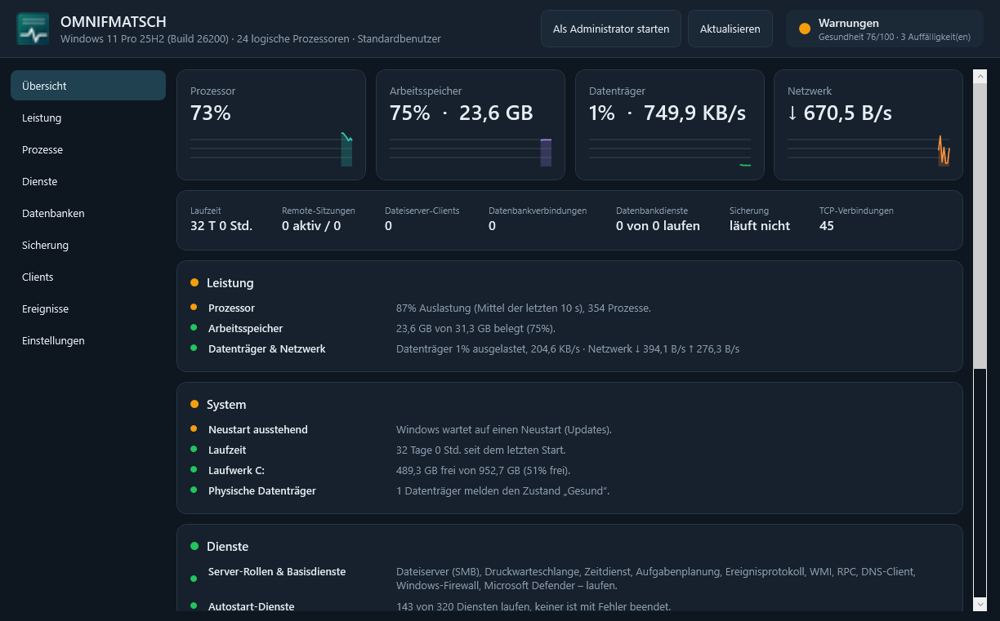
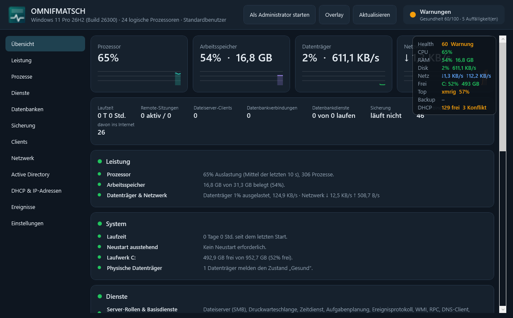
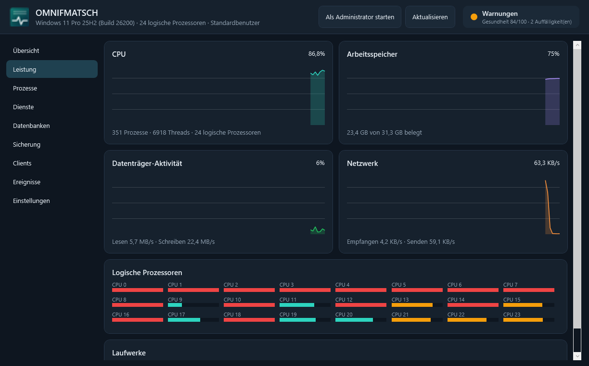
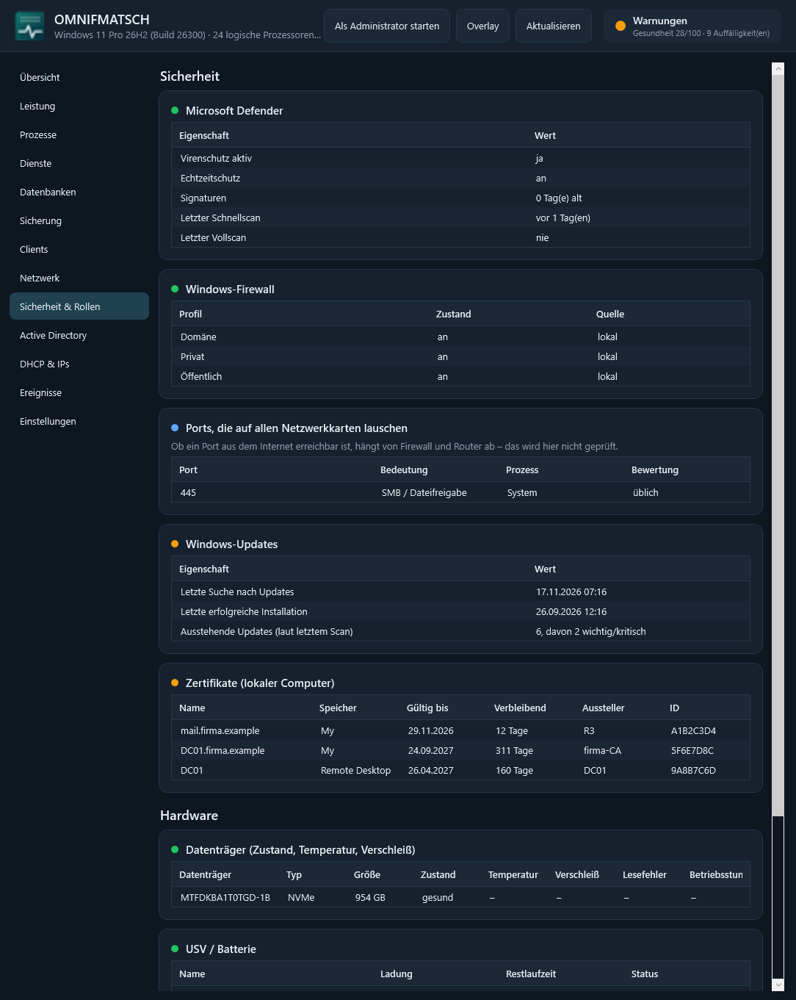
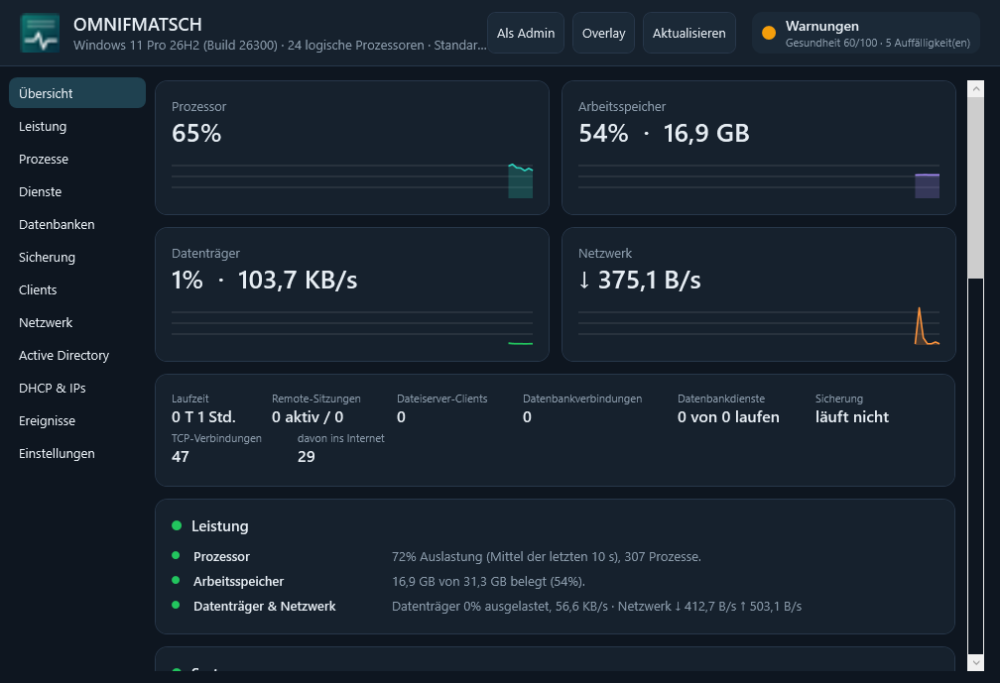
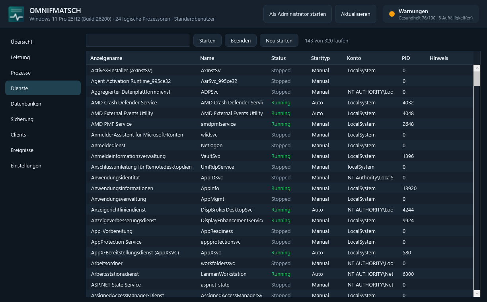
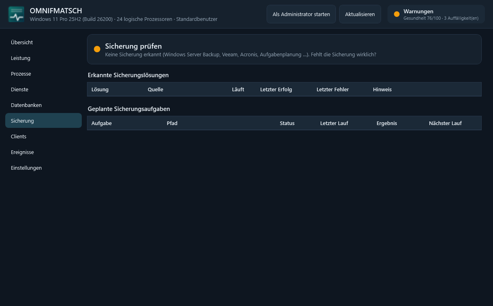
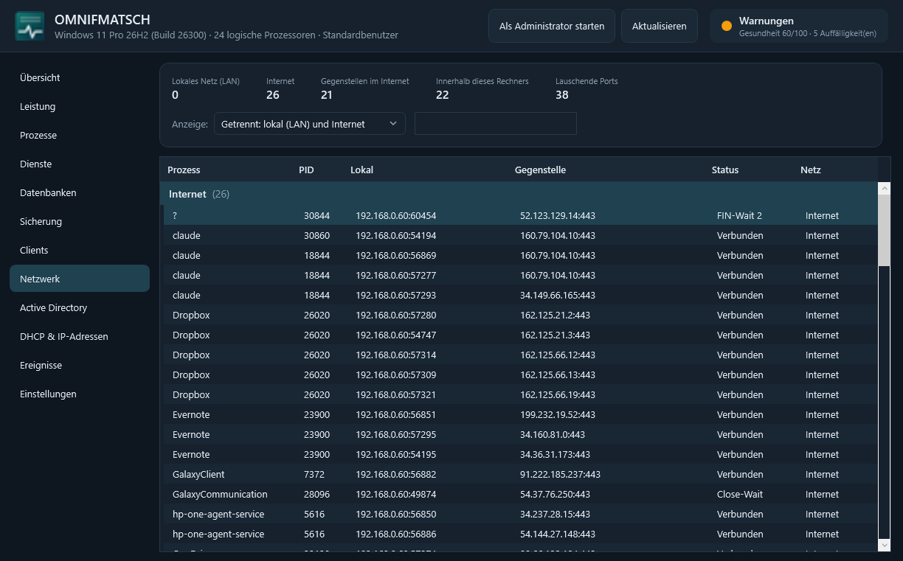
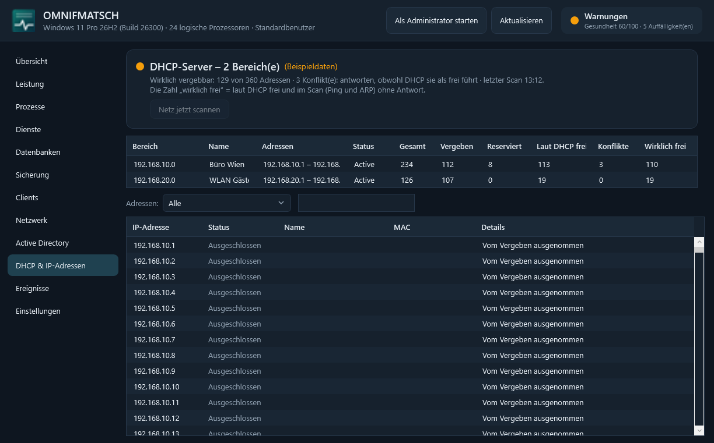
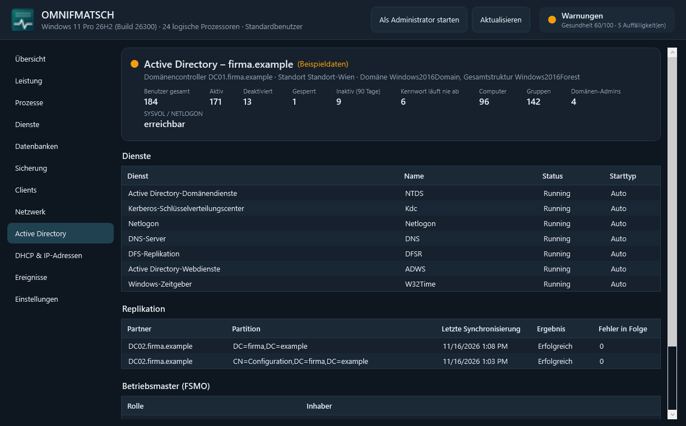

Der Task-Manager für Server: CPU, Speicher, Prozesse und Dienste – plus der Gesundheitscheck, den man sonst an zehn Stellen zusammensucht. Läuft die Datenbank? Wie ausgelastet ist sie? Läuft gerade ein Backup? Wie viele Clients hängen am Server?


Wie ein FPS-Overlay in Spielen: ein kleines Fenster mit den Kennzahlen, die Sie auswählen – immer im Vordergrund, aber klickdurchlässig und ohne Fokus. Es stört weder Mausklicks noch Tastatureingaben.
ServerManagerPro.exe --overlay, optional mit Windows.| Bereich | Woran erkannt | Was es zeigt |
|---|---|---|
| Leistung | Leistungsindikatoren | CPU (auch je Kern), Arbeitsspeicher, Datenträger-Aktivität und -Durchsatz, Netzwerk; Mittelwert statt Momentaufnahme, damit kurze Spitzen nicht alarmieren. |
| Dienste | WMI Win32_Service | Server-Rollen (AD, DNS, DHCP, IIS, Hyper-V, Remotedesktop …) laufen, eigene „muss laufen“-Liste, Autostart-Dienste mit Fehlercode. Dienste starten, beenden, neu starten. |
| Datenbanken | Dienste + TCP-Tabelle | SQL Server, PostgreSQL, MySQL/MariaDB, Oracle, MongoDB, Firebird, Redis: Zustand, CPU, RAM, Verbindungen, Client-Rechner, Ports. Bei SQL Server zusätzlich Batch-Requests/s, Trefferquote, Seitenlebensdauer, blockierte Prozesse, Größe und Transaktionen je Datenbank. |
| Sicherung | Ereignisprotokoll, Aufgabenplanung, Prozesse | Läuft gerade ein Backup (Windows Server Backup, Veeam, Acronis, Backup Exec, Macrium, SQL-Sicherung, VSS-Snapshot)? Wann war die letzte erfolgreiche Sicherung? Schlug eine geplante Aufgabe fehl? |
| Netzwerk | TCP-Tabelle + Prozesse | Alle Verbindungen mit Prozess, getrennt nach lokalem Netz (LAN), Internet, Loopback und lauschenden Ports – umschaltbar und filterbar. |
| Active Directory | nur auf Domänencontrollern | Zustand der Domänendienste (NTDS, KDC, DNS, DFSR …), SYSVOL/NETLOGON, Replikation, Betriebsmaster, Benutzer (aktiv, deaktiviert, gesperrt, inaktiv), Computer, Gruppen, Domänen-Admins. |
| DHCP | nur auf DHCP-Servern | Bereiche, Leases, Reservierungen und ein IP-Scan (Ping + ARP): zeigt, welche Adressen wirklich vergeben werden können und welche trotz „frei“ im DHCP antworten (Konflikte). |
| Sicherheit | Windows-Update-Agent, Defender, Registry, Zertifikatsspeicher | Letzte Update-Installation und ausstehende Updates, Virenschutz-Zustand, Firewall-Profile, BitLocker, ablaufende Zertifikate, Ports, die auf allen Netzwerkkarten lauschen. |
| Hardware | Storage-Zähler, ACPI, Batterie | Datenträger-Zustand, Temperatur, Verschleiß von SSDs, Lesefehler, SMART-Vorhersage, Speicherplätze, USV im Akkubetrieb. |
| Rollen | nur wenn die Rolle vorhanden ist | Hyper-V (VMs, Checkpoints, Replikation), IIS (Websites, Pools, HTTPS-Zertifikate), Druckwarteschlangen, FSRM-Kontingente, Exchange, DFS-Replikation. |
| Clients | Terminaldienste, SMB, TCP | Wer ist per Remotedesktop angemeldet (aktiv/getrennt), welche Rechner greifen per SMB auf Freigaben zu, wie viele TCP-Verbindungen bestehen. |
| System | Registry, Speicher, Storage-WMI | Laufzeit, ausstehender Neustart, freier Platz je Laufwerk, Zustand der physischen Datenträger. |
| Ereignisse | Ereignisprotokolle | Fehler und Warnungen der letzten 24 Stunden aus System und Anwendungen, mit Schwellenwerten. |








Alle Prüfungen fließen in eine Ampel und einen Wert von 0–100. Jede Auffälligkeit sagt im Klartext, was los ist.
Eine einzige EXE, die .NET gleich mitbringt. Auf einem Server einfach kopieren und starten.
Windows Server 2016, 2019, 2022, 2025 sowie Windows 10 und 11 (64 Bit).
Meldungen an ntfy, Teams, Slack, Telegram oder einen Webhook – erst nach einer Verzögerung, ohne Doppelmeldungen, mit Erinnerung und Entwarnung. Nur ausgehende Verbindungen.
Jede Installation kann ihren Status schreibgeschützt per HTTPS bereitstellen (Token, VPN). Eine andere Installation zeigt alle Server auf einer Seite und meldet, wenn einer nicht mehr antwortet.
Die Oberfläche gibt es in beiden Sprachen („Automatisch“ folgt Windows). Seltene Meldungen bleiben vorerst deutsch.
Setup-EXE mit Startmenü-Einträgen und optionalem Overlay-Autostart. Auf Wunsch fragt die App täglich bei GitHub nach einer neuen Version und prüft vor der Installation die SHA-256-Summe.
F5, Strg+Ziffer für die Seiten, Strg+F für den Filter, Fokusrahmen, Namen für Screenreader und ausreichende Kontraste (mindestens 4,5:1).
Die Oberfläche passt sich an: schmalere Navigation, weniger Spalten, kürzere Beschriftungen. Bedienbar bis 1024×768, Mindestgröße 800×540 – etwa auf der Server-Konsole oder per Remote-Sitzung mit niedriger Auflösung.
Schwellenwerte, eigene Dienste, die laufen müssen, zusätzliche Datenbank-Dienste und Backup-Stichwörter.
Der aktuelle Zustand als Markdown-Bericht – für Tickets, Wartungsprotokolle oder die Übergabe.
Die App misst nur. Eingriffe (Dienst starten/beenden, Prozess beenden) passieren erst nach Bestätigung.
Setup: ServerManagerPro-Setup-<Version>.exe von der Release-Seite ausführen – installiert nach C:\Program Files\ServerManagerPro, legt Startmenü-Einträge an und aktualisiert eine vorhandene Installation. Stille Installation mit /SILENT.
Ohne Installation: ZIP von der Release-Seite laden, entpacken und ServerManagerPro.exe starten. Für das volle Bild als Administrator ausführen (Button „Als Administrator starten“ in der Kopfzeile). Einstellungen liegen in C:\ProgramData\ServerManagerPro\settings.json.
Ohne Administratorrechte fehlen einige Werte: SMB-Clients, SQL-Server-Leistungsindikatoren, manche geplante Aufgaben und das Steuern von Diensten. Die App zeigt das an und läuft trotzdem.
DhcpServer) und braucht Leserechte.SHA256SUMS.txt beim Release.